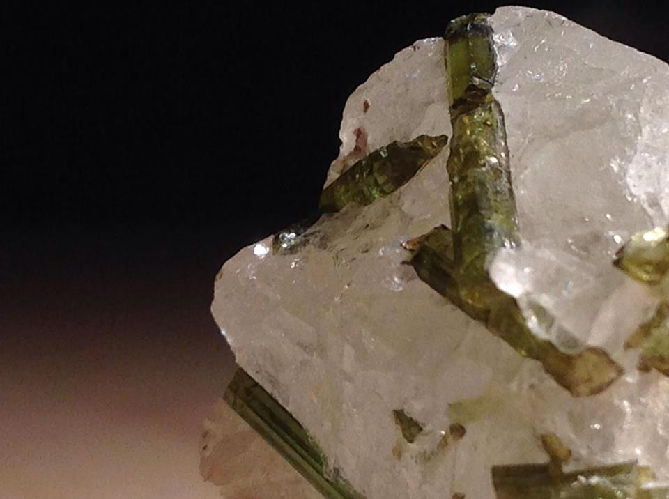
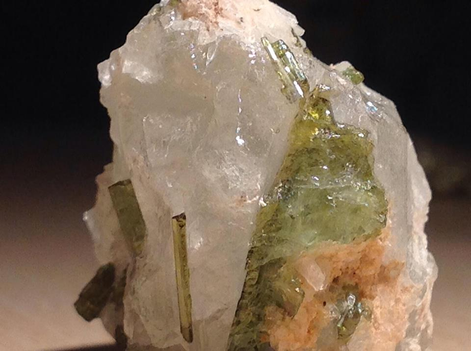

Turmalin



Opis i historia
Turmalin to nie jeden minerał, lecz cała grupa mineralogiczna — ponad 30 różnych gatunków o niemal identycznej strukturze krystalicznej, ale różnym składzie chemicznym. Ta różnorodność powoduje, że turmalin może być praktycznie dowolnego koloru: czarny (schorl), różowy i czerwony (rubelit), niebieski (indikolit), zielony (verdelit), żółty (dravit), wielobarwny (arbuzowy), bezbarwny (achroit) i wiele innych.
Nazwa pochodzi od syngaleskiego słowa turmali oznaczającego „mieszane kamienie" — holenderscy kupcy otrzymywali je na Cejlonie zmieszane z innymi minerałami. Przez wieki wiele turmalinów było mylonych z rubinami, szafirami i szmaragdami — słynny „Rubin Cezara" w czeskiej koronie królewskiej to w rzeczywistości czerwony turmalin-rubelit.
Gdzie występuje
- Brazylia — Minas Gerais; największy producent, w tym słynny turmalin Paraíba (neonowy niebieski z miedzią, odkryty 1989) — jeden z najdroższych kamieni na świecie
- Nigeria i Mozambik — nowe złoża turmalinu Paraíba; tańsze alternatywy dla brazylijskich
- Pakistan i Afganistan — dolina Swat i Nuristan; piękne zielone i wielobarwne kryształy
- Sri Lanka — historyczne złoże, głównie dravit (brązowy) i rubelit
- Tanzania — Umba; wielobarwne turmaliny
- USA — Maine i Kalifornia; piękne elbaity, historycznie ważne złoża
- Namibia — Erongo; doskonałe kryształy na matrycy
Właściwości lecznicze i metafizyczne
Każdy kolor turmalinu ma nieco inne właściwości, ale wszystkie odmiany łączy zdolność do oczyszczania, ochrony i balansowania energii:
Czarny turmalin (schorl) — ochrona i uziemienie
- Najsilniejszy kamień ochronny ze wszystkich — tworzy tarczę 360° wokół właściciela
- Pochłania i neutralizuje wszelką negatywną energię, przekształcając ją w pozytywną
- Silne uziemienie — łączy z energią Ziemi, przynosi poczucie bezpieczeństwa
- Ochrona przed elektromagnetycznym promieniowaniem
Turmalin różowy (rubelit) — miłość i serce
- Otwiera serce na miłość, empatię i współczucie
- Leczy emocjonalne rany i trauma z przeszłości
- Wzmacnia poczucie własnej wartości i radość życia
Turmalin zielony (verdelit) — zdrowie i obfitość
- Silny kamień uzdrawiający — wspomaga regenerację fizyczną
- Przyciąga pomyślność i obfitość materialna
- Łączy energię Ziemi z energią serca
Turmalin arbuzowy — równowaga
- Łączy energię różowego (miłość) i zielonego (uziemienie) turmalinu
- Doskonały do pracy z czakrą serca
- Wzmacnia radość i spontaniczność
Właściwości ochronne
Czarny turmalin (schorl) jest kamieniem nr 1 w ochronie energetycznej:
- Tarcza 360°: tworzy kompletną, energetyczną barierę wokół ciała właściciela odpierającą wszelkie negatywne wpływy
- Ochrona przed elektrosmogiem: umieszczony przy komputerze, routerze Wi-Fi lub telefonie — neutralizuje promieniowanie elektromagnetyczne
- Ochrona przestrzeni: cztery czarne turmaliny w narożnikach pokoju tworzą pełną siatkę ochronną
- Odpieranie negatywnych myśli: nie tylko pochłania — aktywnie przekształca negatywną energię w pozytywną i odsyła ją
- Ochrona podczas snu: pod poduszką lub przy łóżku chroni przed koszmarami i astralnym zagrożeniem
Czakry
Pielęgnacja i ładowanie
- Czyszczenie: woda (turmalin toleruje wodę), dym, dźwięk, selenite
- Ładowanie: słońce lub ziemia — turmalin dobrze reaguje na obie metody
- Piezoelektryczność: turmalin generuje ładunek elektryczny pod wpływem nacisku — pocieranie kryształu aktywuje go
Ciekawostki
- Turmalin jest jednym z nielicznych minerałów wykazujących piroelektryczność — generuje ładunek elektryczny pod wpływem temperatury. Holenderscy kupcy używali go do wyciągania popiołu z fajek
- Turmalin Paraíba z Brazylii osiąga ceny do 50 000 USD za karat — jego neonowy niebieski kolor nie istnieje w żadnym innym kamieniu naturalnym
- „Rubin Cezara" w Złotej Koronie Czech (XIV w.) to w rzeczywistości czerwony turmalin — błąd odkryto dopiero w XX wieku badaniami spektroskopowymi
- Chińska cesarzowa Cixi (1835–1908) była wielką miłośniczką różowego turmalinu — kolekcjonowała ogromne ilości i nakazała go wydobywać w Californii